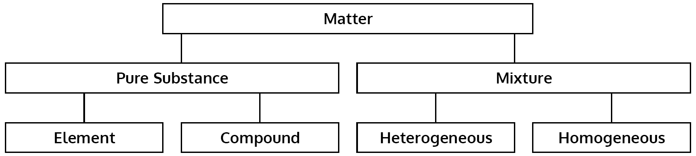

Matter
Matter refers to any substance that has:
- mass
- volume (occupies space)
Phases of Matter
We can classify matter according to its phase or state.
- Solids: Maintain a fixed shape.
- Liquids: Maintain a fixed total volume but take on the shape of their container.
- Gases: Expand to fill their container.
Other exotic phases may occur at extreme temperatures.
Pure Substances
Matter can also be classified as either a pure substance or a mixture.
A pure substance contains only one type of “molecule”.
- Elements are pure substances made from only one kind of atom (e.g. iron or oxygen).

- The periodic table lists all known elements.
- Compounds are pure substances whose molecules are made from different kinds of atoms (e.g. H2O or CO2).

Heterogeneous Mixtures
Matter containing two or more pure substances is called a mixture.
A heterogeneous mixture is characterized by incomplete mixing.
- For example, a mixture of salt and sand would contain white regions that are recognizably salt, and brown regions of sand.
- Heterogeneous mixtures are also called mechanical mixtures.
Homogeneous Mixtures
A homogeneous mixture is completely mixed.
- For example, when sugar is added to warm water, the sugar “dissolves” and mixes uniformly with the water.

- Uniform mixing means the properties of the mixture are the same everywhere; there are no regions of just water or just sugar.
- Homogeneous mixtures are also called solutions.
- The material that is dissolved (e.g. sugar) is called the solute.
- The material does the dissolving (e.g. water) is called the solvent.
Summary

Separating Mixtures
- Filtration: Smaller particles pass through the filter but the larger particles do not.
- Distillation: The mixture is heated until some components start to evapourate while others do not.
- Chromatography: The mixture moves through paper or another substance, with the different components moving at different rates.

Chemical & Physical Change
Chemical change occurs when a substance reacts to produce a new, different substance.
- When paper, wood, or another fuel burns, a chemical change occurs.
- When a metal rusts, a chemical change occurs.
- Properties related to chemical changes, such as combustibility, are called chemical properties.
Physical change occurs when the properties of a substance change but it is still the same substance.
- Making or separating mixtures are physical changes.
- Changing phase (e.g. ice melting) is a physical change.
- Properties related to physical changes, such as density or temperature, are called physical properties.